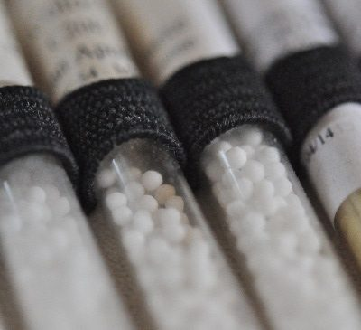
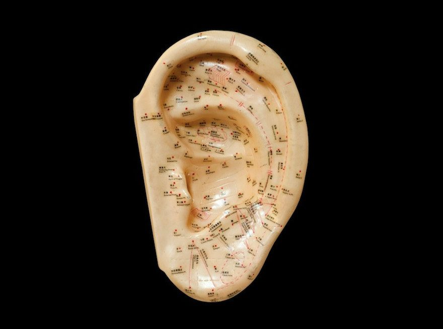

Zentrum für ganzheitliches Heilen
Die Praxis befindet sich in der Ludwigstraße 48 in 82380 Peißenberg, Nähe Weilheim und Schongau. Es erwarten Sie ganzheitliche Therapieansätze und traditionelle Heilmethoden.
Praxisinformation
Liebe Patientinnen und Patienten, wir möchten Sie darüber informieren, dass Dr. med. Barbara Tilmann ihre Praxistätigkeit derzeit vorübergehend aussetzen muss und in dieser Zeit leider nicht erreichbar ist. Aus diesem Grund können momentan keine Anfragen, Terminwünsche oder organisatorischen Anliegen bearbeitet werden.
Sobald es wieder möglich ist, sich bei der Praxis zu melden, können individuelle Anliegen besprochen und – sofern gewünscht – eine strukturierte Übergabe an andere Behandlerinnen und Behandler organisiert werden. Wir bitten Sie herzlich um Ihr Verständnis und Ihre Geduld in dieser besonderen Situation.
Therapieansätze und traditionelle Heilmethoden
-

Allgemeinmedizin
Als Human-Medizinerin wende ich mich Menschen in jeder Lebenslage und jedem Alter zu. Gemeinsam betrachten wir Ihre gesundheitliche Situation, fragen nach möglichen Ursachen und wählen den besten Ansatz der körperlich medizinischen, ganzheitlichen und naturheilkundlichen Behandlung.
-

Klassische Homöopathie
Die Homöopathie ist eine eigenständige Behandlungsmethode mit klar definierten Gesetzen und wissenschaftlicher Grundlage. Sie ist eine Therapie, in der der Mensch in seiner gesamten Wesenheit von Körper, Seele und Geist betrachtet und behandelt wird.
-
Bachblüten-Essenzen
In meiner Praxis kommen die Blütenessenzen seit einem viertel Jahrhundert zum regelmäßigen Einsatz. Inzwischen verfüge ich über einen fundierten Erfahrungsschatz sowohl bei akuten Krankheitszuständen wie auch bei seelischen Krisen.
-

Ohr-Akupunktur
Über mehr als 40 Jahre ist mein Erfahrungsschatz in der Anwendung der Ohr-Akupunktur gewachsen. Dabei vertraue ich auf die zuverlässige Diagnosestellung und die effektive Wirkung bei der Behandlung von Schmerzen und Regulationsstörungen aller Art.
-

Mikrobiologische Therapie
Bei der mikrobiologischen Therapie werden lebende oder abgetötete Mikroben aus der Darmflora verwendet und deren Bestandteile und Probiotika oral oder parenteral verabreicht. Hinzu kommt die Gabe von Autovaccinen – individuell angefertigte Eigenimpfstoffe.
Weitere Schwerpunkte
Wichtiger Themenschwerpunkt meiner Arbeit ist ganzheitliche Aufstellungsarbeit mit überlieferten Heilsymbolen und Naturheilung mit dem Medizinrad von Sun Bear. Außerdem biete ich schamanistische Ritualarbeit und Prozessbegleitung, systemische Körpertherapie, körperzentrierte Bewusstseinsarbeit, kontemplative Kommunikationstherapie und Supervision in der Praxis und in Seminaren an.
Kostenübernahme
Die Behandlungskosten meiner Praxis werden von den Privatkassen übernommen. Falls Sie eine Zusatzversicherung abgeschlossen haben, stellen Sie vorab sicher, dass diese ärztliche Leistungen im ambulanten Behandlungsbereich laut GOÄ auch explizit für Homöopathie und Akupunktur erstattet. Viele Zusatzversicherungen übernehmen nur Behandlungen beim Heilpraktiker.
Als Selbstzahler informiere ich Sie selbstverständlich vor Behandlungsbeginn in einem persönlichen Gespräch über die Kosten. Wenn Sie wünschen, legen wir vorab einen Kostenrahmen fest, an welchem sich das Behandlungsangebot und der Zeitaufwand orientieren.
Kontakt
- Praxis
- Ludwigstraße 48, 82380 Peißenberg
- Telefon
- 08803 498 3010
- Mobil
- 0172 831 4441
- Fax
- 08803 498 3020
- drbarbara@tilmann-chiron.com
Telefonische Sprechzeit: Montag bis Donnerstag, 9:00–10:00 Uhr. Die Mobilnummer erreichen Sie auch in dringenden Fällen.